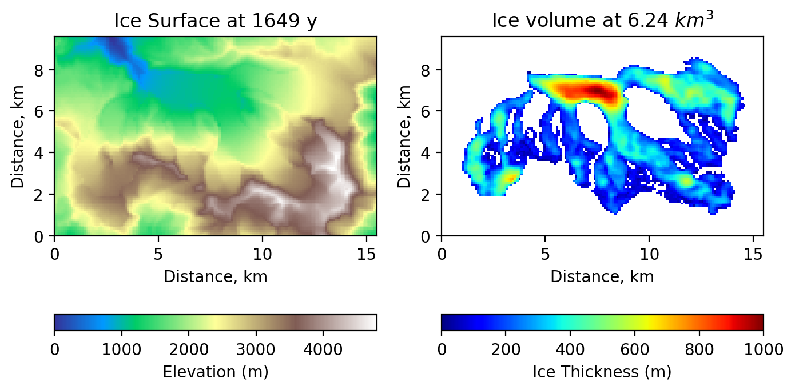

Exercices 11#
Exercice : Equation de la glace en 2D#

Le Glacier du Gorner vers Zermatt
Déformation de la glace#
L’objectif de l’exercice est d’implémenter l’équation de la glace en 2D pour simuler l’évolution du glacier du Gorner situé vers Zermatt. En deux dimensions, l’évolution de l’épaisseur de la glace se traduit par
où \(h\) est la hauteur de glace, \(l\) est l’altitude du lit rocheux, \(s=l+h\) l’altitude de la surface de la glace, \(t\) le temps, \(b\) le bilan de masse (accumulation moins ablation de glace en surface), \(D\) la diffusivité dynamique de la glace. La non-linéarité vient de la constante de diffusivité \(D\), qui dépend elle-même de l’épaisseur locale de la glace \(h\) et de la pente de sa surface \(||\nabla s||^2 = (\frac{\partial s}{\partial x})^2 + (\frac{\partial s}{\partial y})^2\) :
où \(f_\mathrm{d}\) est une constante physique, \(\rho\) la densité de la glace, \(g\) la constante gravitationnelle.
Lecture des données (fichiers topg.dat, thk.dat et icemask.dat)#
Pour la topographie du lit rocheux, utilisez le fichier topg.dat ainsi que le code qui lit le tableau des altitudes (avec une résolution de 100 m). Dans cette première étape, nous utilisons le paramètre coarsen pour travailler avec une résolution plus grossière, ce qui est toujours utile lors de la construction du code. En définissant coarsen=2, nous obtiendrons une résolution de 200 m. Cela réduira la taille de la grille par un facteur de 4, ce qui rendra le code plus rapide. Une fois le code terminé, nous pourrons tester une résolution plus élevée en réglant coarsen=1. Nous lirons également les fichiers thk.dat, qui fournissent l’épaisseur contemporaine du glacier (que nous prendrons comme condition initiale en l’absence de données passées), ainsi que icemask.dat, qui permet de définir un masque utile pour le calcul du bilan de masse. Voila le code qui permet de lire les données:
coarsen = 1
l = np.loadtxt('topg.dat')[::coarsen,::coarsen]
h = np.loadtxt('thk.dat')[::coarsen,::coarsen]
icemask = np.loadtxt('icemask.dat')[::coarsen,::coarsen]
A partir des données et de la résolution de 100 m, on peut en déduire les paramètres numériques:
ny,nx = l.shape
dx=coarsen*100
dy=coarsen*100
Lx = dx*nx
Ly = dy*ny
Forçage climatique#
Comme dans le cas 1D, le bilan de masse \(b(s)\) est défini en fonction de l’altitude et dépend de trois facteurs : 1) une pente qui contrôle le gradient du bilan de masse \(b_\mathrm{grad}\), 2) une valeur maximale pour l’accumulation \(b_\mathrm{max}\), et 3) l’altitude de la ligne d’équilibre \(s_\mathrm{ELA}\) au-delà de laquelle la glace s’accumule et en deçà de laquelle la glace fond. Mathématiquement, \(b(s)\) peut ainsi être écrit comme :
Dans cet exercice, la valeur de la ligne d’équilibre \(s_\mathrm{ELA}\) varie au cours du temps (afin de faire évoluer le glacier, voir la table des paramètres plus bas). Ensuite, nous implémenterons la formule du bilan de masse ainsi :
b = np.minimum(grad_b * (s - s_ELA), b_max)
b = np.where( (b < 0) | (icemask > 0.5), b, -10)
La seconde ligne ci-dessus utilise un “masque”, qui est lu dans les données. Ce masque permet de confiner le “glacier du Gorner” en n’autorisant l’ablation à -10 m/yr que dans le bassin du glacier du Gorner, afin d’éviter la formation d’autres glaciers (non souhaités) dans le domaine modélisé. En dehors du masque (icemask < 0.5), une ablation forte (-10 m/yr) est imposée pour forcer l’absence de glacier.
Figure#
Pour une figure ressemblant à la figure ci-dessous, nous pouvons utiliser le code, lequel permet un affichage simultanée de la surface et l’épaisseur de glace à l’initialisation:
fig, (ax1,ax2) = plt.subplots(1,2,figsize=(8, 6),dpi=200)
f1 = ax1.imshow(s, extent=[0, Lx/1000, 0, Ly/1000], cmap='terrain', origin='lower', vmin=0, vmax=4800)
cbar = fig.colorbar(f1, ax=ax1, orientation='horizontal', label='Elevation (m)')
f2 = ax2.imshow(np.where(h>0,h,np.nan), extent=[0, Lx/1000, 0, Ly/1000], cmap='jet', origin='lower', vmin=0, vmax=1000)
ccbar = fig.colorbar(f2, ax=ax2, orientation='horizontal', label='Ice Thickness (m)')
et dans la boucle:
clear_output(wait=True)
ax1.cla()
ax2.cla()
ax1.imshow(s, extent=[0, Lx/1000, 0, Ly/1000], cmap='terrain',origin='lower')
ax1.set_title('Ice Surface at ' + str(int(time))+ ' y')
ax1.set_xlabel('Distance, km')
ax1.set_ylabel('Distance, km')
ax2.imshow(np.where(h>0,h,np.nan), extent=[0, Lx/1000, 0, Ly/1000], cmap='jet',origin='lower')
ax2.set_title(f'Ice volume at {ice_volume:.2f} $km^3$')
ax2.set_xlabel('Distance, km')
ax2.set_ylabel('Distance, km')
display(fig)
Optionnellement, nous avons ici affiché le volume total de glace, qui peut être calculé à partir de l’épaisseur de glace et de la résolution de la grille \(dx\).

Modèle de l’écoulement de glace du glacier du Gorner.
But: Modélisation du retrait récent, et modélisation pronostique jusqu’à 2100#
En utilisant les données topographiques du glacier (lit rocheux et épaisseur contemporaine), nous allons modéliser le glacier de 1950 jusqu’à 2100. L’objectif est de reconstruire son retrait passé récent, ainsi qu’un pronostic de son évolution jusqu’en 2100 (avec une forte augmentation des températures matérialisée par une augmentation significative de la ligne d’équilibre). Pour cela, on suppose une ligne d’équilibre de 3200 m fixe jusqu’en 2000, qui augmentera linéairement de 5 m par an (soit 100 m tous les 20 ans) entre 2000 et 2100.
Observez l’évolution du glacier du Gorner en 2020 et comparez votre résultat aux images sur map.geo.admin.ch.
Paramètres: |
Valeurs: |
|---|---|
constante de gravité |
9.81 \(m/s^2\) |
densité de la glace \(\rho_\mathrm{ice}\) |
910 \(kg/m^3\) |
constante physique \(f_\mathrm{d}\) |
\(0.25 \times 10^{-16}\) [\(Pa^{-3} yr^{-1}\)] |
bilan de masse maximum \(b_\mathrm{max}\) |
0.5 m/yr |
gradient du bilan de masse \(b_\mathrm{grad}\) |
0.005 |
Temps initial |
1950 (y) |
Temps final |
2100 (y) |
✅ À vous de faire !#
import numpy as np
import matplotlib.pyplot as plt
from IPython.display import display, clear_output
# Paramètres physiques
time_init = 1950
time_final = 2100
grad_b = 0.005 # Gradient du bilan de masse (sans unité)
b_max = 0.5 # Précipitation maximale (m/an)
rho = 910.0 # Densité de la glace (kg/m^3)
g = 9.81 # Gravité terrestre (m/s^2)
fd = 0.25 * 1e-16 # Constante de déformation (Pa^-3 an^-1)
# Chargement de la topographie du glacier du Gorner
coarsen = 1
l = np.loadtxt('topg.dat')[::coarsen,::coarsen]
h = np.loadtxt('thk.dat')[::coarsen,::coarsen]
icemask = np.loadtxt('icemask.dat')[::coarsen,::coarsen]
ny,nx = l.shape
dx=coarsen*100
dy=coarsen*100
Lx = dx*nx
Ly = dy*ny
nout = 100 # Fréquence d'affichage
dtmax = 1 # Pas de temps maximum
dt = dtmax # Pas de temps initial
x = np.linspace(0, Lx, nx) # Coordonnées x
y = np.linspace(0, Ly, ny) # Coordonnées y
s = l + h # Surface initiale de la glace
time = time_init # Temps initial
it = 0
fig, (ax1,ax2) = plt.subplots(1,2,figsize=(8, 6),dpi=200)
f1 = ax1.imshow(s, extent=[0, Lx/1000, 0, Ly/1000], cmap='terrain', origin='lower', vmin=0, vmax=4800)
cbar = fig.colorbar(f1, ax=ax1, orientation='horizontal', label='Elevation (m)')
f2 = ax2.imshow(np.where(h>0,h,np.nan), extent=[0, Lx/1000, 0, Ly/1000], cmap='jet', origin='lower', vmin=0, vmax=1000)
ccbar = fig.colorbar(f2, ax=ax2, orientation='horizontal', label='Ice Thickness (m)')
# Boucle temporelle
while time < time_final:
# Mise à jour du temps
time += dt
it += 1
# Astuce : pour être sûr que les matrices ont les bonnes dimensions,
# il faut anticiper les dimensions en partant de la fin :
# dhdt doit être de taille (ny-2,nx-2)
# donc qx doit être de taille (ny-2,nx-1) et qy de taille (ny-1,nx-2)
# donc D doit être de taille (ny-1,nx-1)
# donc Snorm et h_avg doivent être de taille (ny-1,nx-1)
# Calcul de h_avg, taille (ny-1,nx-1) en moyennant les 4 points autour
h_avg = 0.25 * (h[:-1, :-1] + h[1:, 1:] + h[:-1, 1:] + h[1:, :-1])
# Calcul de Snorm, taille (ny-1,nx-1),
# en différenciant d'un côté, moyennant de l'autre, on perd une dimension de chaque côté
Sx = (s[:,1:] - s[:,:-1]) / dx
Sy = (s[1:,:] - s[:-1,:]) / dy
Sx = 0.5 * (Sx[:-1, :] + Sx[1:, :])
Sy = 0.5 * (Sy[:, :-1] + Sy[:, 1:])
Snorm = np.sqrt(Sx**2 + Sy**2)
# Calcul de D, taille (ny-1,nx-1)
D = fd * (rho * g)**3.0 * h_avg**5 * Snorm**2
# Calcul du pas de temps dt qui nécessite D
dt = min(min(dx, dy)**2 / (4.1 * np.max(D)), dtmax)
# Calcul de qx, taille (ny-2,nx-1), on perd une dimension à y en moyennant D, et différenciant à x
qx = -(0.5 * (D[:-1,:] + D[1:,:])) * (s[1:-1,1:] - s[1:-1,:-1]) / dx
# Calcul de qy, taille (ny-1,nx-2), on perd une dimension à x en moyennant D, et différenciant à y
qy = -(0.5 * (D[:,:-1] + D[:,1:])) * (s[1:,1:-1] - s[:-1,1:-1]) / dy
# Règle de mise à jour (diffusion), taille (ny-2,nx-2)
dhdt = - ( (qx[:,1:]-qx[:,:-1]) / dx + (qy[1:,:]-qy[:-1,:]) / dy )
h[1:-1, 1:-1] += dt * dhdt
# Changement de la ligne d'équilibre (ELA)
Z_ELA = 3200 + max((time - 2000) * 5,0)
b = np.minimum(grad_b * (s - Z_ELA), b_max)
b = np.where( (b < 0) | (icemask > 0.5), b, -10)
# Règle de mise à jour (bilan de masse)
h += dt * b
# Règle de mise à jour (épaisseur positive)
h[h<0] = 0
# Mise à jour de la topographie de surface
s = l + h
ice_volume = np.sum(h) * (dx ** 2) / 10 ** 9
# Affichage
if it % nout == 0:
clear_output(wait=True) # Efface l'affichage dans VS Code
ax1.cla()
ax2.cla()
ax1.imshow(s, extent=[0, Lx/1000, 0, Ly/1000], cmap='terrain',origin='lower')
ax1.set_title('Ice Surface at ' + str(int(time))+ ' y')
ax1.set_xlabel('Distance, km')
ax1.set_ylabel('Distance, km')
ax2.imshow(np.where(h>0,h,np.nan), extent=[0, Lx/1000, 0, Ly/1000], cmap='jet',origin='lower')
ax2.set_title(f'Ice volume at {ice_volume:.2f} $km^3$')
ax2.set_xlabel('Distance, km')
ax2.set_ylabel('Distance, km')
display(fig)